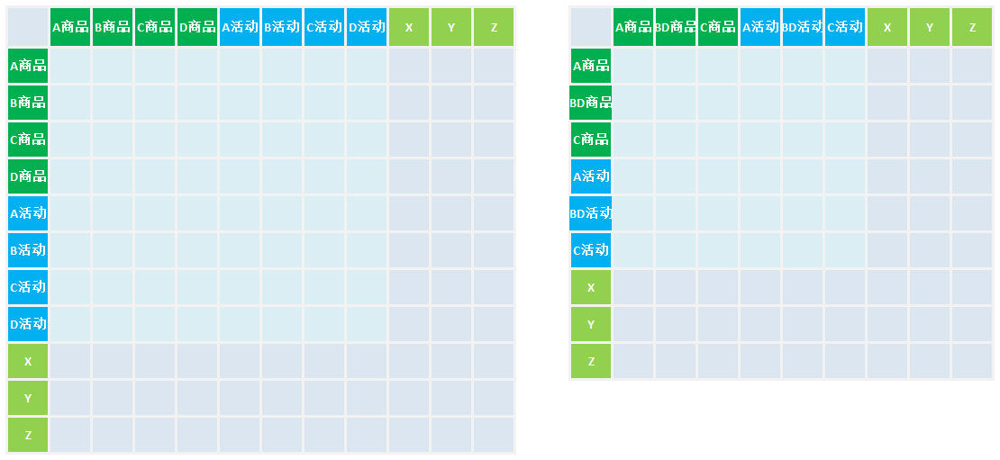
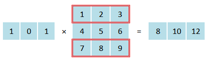
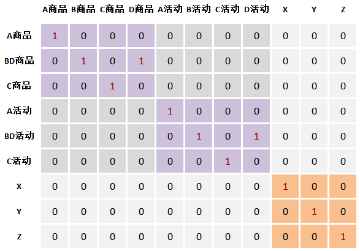

程序实现社会核算矩阵（SAM）的账户集结与平衡¶
发布于：2015-11-04 | 分类：mathematics
最近协助一位经济学专业的同学完成了社会核算矩阵（Social Accounting Matrix）的账户集结与平衡，现记录此过程中的一些要点，以作备忘。
首先使用0-1矩阵法集结账户，然后使用直接交叉熵法平衡SAM，具体流程为：
- 使用Matlab软件从Excel文件读入原始数据
- 分别左乘和右乘相应的矩阵集结账户
- 输出集结后的SAM数据到Excel文件
- 使用GAMS软件读入上一步输出的SAM数据
- 优化得到平衡后的SAM数据
- 输出到Excel文件
问题描述¶
由于不了解相关专业背景，下面就直接从数学角度进行描述。一个简化版（减少账户数和要素数）的SAM表即一个矩阵的结构如下图所示，我们的需求是：

-
将账户B和D合并为账户BD
考虑到B、D商品账户分别对应了B、D活动账户，所以实际上需要合并矩阵中B商品、D商品列为一个BD商品列，同时合并B活动、D活动列为BD活动列。
-
平衡SAM表
通过交叉熵定义的模型调整矩阵的元素，使之满足第i行元素之和与第i列元素之和相等。
合并矩阵¶
假设\alpha是一个元素为0或1的行向量，则根据矩阵乘法运算规律可知，矩阵M左乘\alpha的效果为：将矩阵M的某些行相加，而这些行恰好是行向量\alpha中元素1对应的位置，如下图所示。同理，矩阵M右乘元素为0或1的列向量\beta，可以将\beta中元素1位置对应矩阵M的列求和。

因此，得到结论：左乘0-1行向量可以合并行，右乘0-1列向量可以合并列。
于是，将合并不同行的行向量(\alpha_1, \alpha_2, \cdots)组合为矩阵A；由于需要合并的列与行是相对应的，所以右乘的合并矩阵即为A的转置矩阵A^T。最终，合并后的矩阵N=A\,M\,A^T。
根据以上推理，本例的合并矩阵A如下图所示：

例如，第一行的行向量只有第1个元素为1，表示提取原矩阵的第一行；第二行的第2,4个元素为1，表示提取原矩阵的第二、四行，即合并B、D商品，其他以此类推。对于本例SAM矩阵行列数较少的情况，可以直接写出合并矩阵A。但是，如果实际情况下行列数非常多（例如实际处理时为94×94），则需要程序自动生成。观察以上示例矩阵，可知其具有如下规律：
- 除了图中紫色、橙色标示出的矩阵块之外，其余元素都为0；
- 两个紫色的矩阵块完全一致，其特点为需要合并位置的元素为1，其余位置元素为0；
- 橙色矩阵块为一个单位矩阵。
所以构造合并矩阵A的思路为：生成紫色的矩阵块→扩充为左上角部分矩阵→生成右下角单位矩阵→扩充为完整的合并矩阵。这在Matlab中很容易实现，关键代码如下：
% 读入指定区域的原始数据
data = xlsread(filename,input_sheet,range);
data(isnan(data)) = 0.0; % 将空值设为0
% 合并规则
col = {1,[2,4],3}; % 表示A、B+D、C
N = length(cell2mat(col)); % 合并前商品/活动数
T = length(col); % 合并后商品/活动数
M = size(data,1) - 2*N; % 其他项目数（例如示例的X，Y，Z等）
% 构造紫色矩阵块
sub_a = zeros(T, N);
for i =1:T
sub_a(i,col{i}) = 1; % 将合并要求中指定位置的元素设置为1
end
% 扩充为针对商品&活动的矩阵块
sub_a = [sub_a zeros(size(sub_a)); zeros(size(sub_a)) sub_a];
% 组装为总的合并矩阵
A = [sub_a zeros(2*T,M);zeros(M,2*N) eye(M)];
% 合并矩阵
ydata = A*data*A';平衡矩阵¶
平衡SAM表使用的是直接交叉熵法，模型及原理不在此阐述，GAMS求解程序可以参考相关专业的材料，例如《可计算一般均衡模型的基本原理与编程》的第五章《SAM表的平衡》。实际操作中需要注意SAM表的读写，这可以参考GAMS相关文档 1。
SAM表的读入¶
对于数据较少的情况，例如本例可以直接以table的形式输入；但是，如果数据量很大，则可以直接读入Excel文件，代码如下：
set i "定义项目集合，假设有60个账户" /data1*data60/ ;
alias(i,j) ;
Parameters sam(i,j) "核算矩阵" ;
* 读入合并后的SAM表，赋值给sam参数
$libinclude xlimport sam C:\Users\Administrator\GAMS\SAM.xlsx sheet2!A1:BI61
SAM表的写出¶
类似地，将平衡后的SAM表数据写出到Excel文件的代码如下：
* 写Excel文件, Q为平衡调整后的数据
$LIBInclude Xlexport Q.l C:\Users\Administrator\Desktop\temp\GAMS\SAM.xlsx sheet3!A1:BI61
最后特别注意：
读入的SAM表中必须包含与GAMS程序中的set一致的索引（表头），写出Excel文件的工作表中也必须事先存在与SAM表一致的索引。